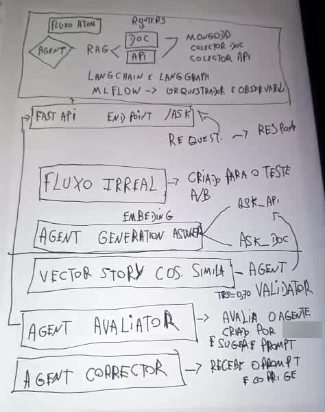
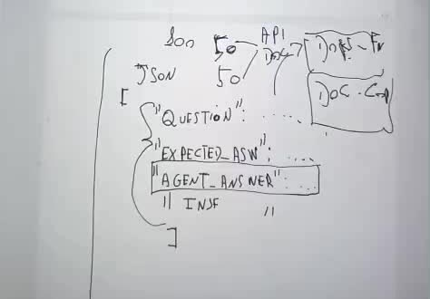

The Two-Judge Loop (VERA): the agent pattern I sketched a month before ACE
Two judges, a proven fix and a human decision. What I got right, what the paper did better, and the design I'd ship today.
On September 6, 2025, I recorded myself on a tablet explaining a design to my team. The request I had received was simple: "break my agent." A colleague had built a RAG agent that was running in Dev, QA and UAT, and I had to find out where it failed. My first version (V0), a single similarity check, did not give satisfying results. So I drew a loop of agents that tests the production agent, judges every answer twice, proposes a better prompt, and tries again.
I call this pattern the Two-Judge Loop, or VERA for its four steps:
On October 6, 2025, researchers from Stanford, SambaNova and UC Berkeley published Agentic Context Engineering (ACE). Its core idea: a Generator, a Reflector and a Curator that turn an agent's context into an evolving playbook. Reading it felt very familiar.
I'm not claiming I invented ACE. The research community was clearly converging on this idea, and ACE builds directly on earlier work. My point is a different one: if you run agents in production long enough, you get pushed toward this architecture. When a practitioner and a research team land on the same shape independently, that shape is probably right.
The original sketch


The current flow
A LangChain/LangGraph agent behind a FastAPI /ask endpoint. A router sends each question either to a document connector or to an API connector in MongoDB, where LangChain handles splitting and chunking. MLflow is there mostly for observability: it traces what the user asked and what the agent did.
The test flow
A separate pipeline that never answers real users. It generates its own test set, fires it at the agent, judges every answer twice, and tries to fix what fails. Tap each step:
ask_doc and ask_api)./ask. It tests the real agent with its real routing and retrieval, not a simplified copy.doc_correct; weak ones go to doc_fine_tuner. And the team, not the loop, decides whether to adopt the changes.Why one judge wasn't enough
Drag the threshold, then turn on the second judge. Too low and bad answers pass; too high and correct answers worded differently fail. Watch the last row:
A confident answer with the wrong number can look very similar to the right one. Similarity alone passes it. That is what happened to my V0, and it is why I added an LLM evaluator: an answer has to pass both judges.
The Two-Judge Loop vs ACE
Put the two side by side and the overlap is clear: an agent that answers, a critic that explains what went wrong, and a component that turns that critique into better instructions. The differences are in how the instructions change and who approves the change.
Step by step
/askdoc_correct / doc_fine_tuner collectionsDimension by dimension
| VERA (Sep 2025) | ACE (Oct 2025) | Edge | |
|---|---|---|---|
| Goal | Stress-test and fix one production RAG agent | General framework for self-improving contexts | — |
| Unit of change | Whole prompt | Itemized bullets | ACE |
| Quality signal | Two judges + expected answers | Labels or execution feedback | VERA |
| Needs labels? | Yes (synthetic) | No, but works better with them | ACE |
| Change is proven before use | Yes, re-answered and re-judged | No per-update check | VERA |
| Avoids context collapse | Not addressed | Core design goal | ACE |
| Human control | Team approves | Autonomous | VERA |
| Learns at test time | No | Yes (online mode) | ACE |
| Evidence | Internal test, no published numbers | Peer-reviewed benchmarks | ACE |
What ACE reported
Scores as reported in the paper. ACE also reports 86.9% lower adaptation latency on average than existing adaptive methods.
The detail that surprised me
The paper is honest about its weak spot: everything depends on the quality of the feedback. On the finance tasks without ground-truth labels, both ACE and Dynamic Cheatsheet got worse, and the context could be polluted by misleading signals.
That is the exact problem my two judges and expected answers were built for. VERA cares most about whether an answer is right; ACE cares most about how to remember what was learned. The two halves fit together.
What ACE did better
- Small updates, not whole prompts. Repeated rewriting erodes details over time (context collapse). Itemized bullets keep what already works.
- Lessons, not just answers. My loop saved answers and pointed weak ones toward fine-tuning. ACE saves the lesson behind each failure, so no retraining is needed.
- Item-level tracking. Helpful/harmful counters show which rule earns its place.
- Fewer labels. My expected answers came from another agent; if it was wrong, both judges measured against a wrong reference.
What VERA did better
- Two judges. Similarity catches drift; an LLM judge catches wrong facts.
- Prove the fix. A suggested prompt only counts after it produces better answers and passes both judges again.
- A safe fallback. If nothing passes, return a known-good answer.
- A human decision. The loop proposed; the team decided.
The failure mode nobody draws
After I posted about ACE, a commenter described letting an agent rewrite its own instructions: it kept the workaround, deleted the warning, and taught the next run to do the same.
A self-improving loop optimizes for whatever it can measure. If a workaround passes the metric, it gets reinforced, and the warning that slowed it down looks like noise.
Delta updates prevent context collapse. They do not prevent learning the wrong lesson. That needs governance, and it is where a production design has to go beyond the paper.
Looking back, my loop never edited production by itself. It proposed a prompt, proved it on the test set, and left the decision to the team. At the time, that just felt like the polite thing to do with someone else's agent. Now I think it is the main design principle.
The design I'd ship today
My September loop plus ACE's playbook, with guardrails:
# playbook.yaml human_rules: # owned by the team, read-only to agents - "Never expose internal API keys in answers" - "Auth questions always route to ask_doc" agent_tactics: # agent may add/edit - id: t-042 text: "For pricing questions, call ask_api before ask_doc" source_run: mlflow:run/8f3c… helpful: 14 harmful: 1 policy: additions: auto_if_ab_wins deletions: human_review # removing anything needs a person touches_human_rules: blocked
- Two zones. Team decisions are read-only. Agent tactics are editable.
- Provenance. Every tactic points to the run where it was learned.
- Asymmetric permissions. Adding is cheap. Deleting needs a person.
- Two judges plus a release gate. Nothing reaches production without passing both judges and beating the current version in the test flow.
- Independent references. Expected answers checked by a person, or produced by a different model than the one being tested.
Takeaway
Before you change the model, look at what the agent is reading. Then build a loop that improves it, and make sure every change has a reason, a score and an owner.
Would you let your agent delete rules from its own playbook?
Sources
Zhang et al., Agentic Context Engineering: Evolving Contexts for Self-Improving Language Models (arXiv 2510.04618)
ACE code on GitHub
Sketch images: frames from my own recordings, Sep 6, 2025.